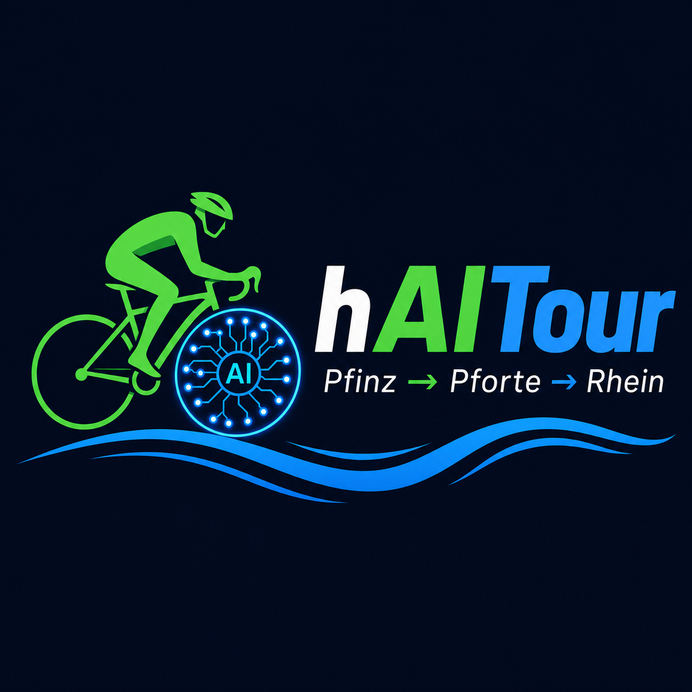

Teil 1 – Pfinz / Pforte 🌳
Einrollen entlang der Pfinz, viel Grün und ruhige Wege.
Screenshot →
images/teil1/map_part1.png
Hybride AI/Fahrradtour-Dokumentation – mit Karten, GPX-Tracks und wachsender Bildergalerie.
| Abschnitt | Google Maps | GPX Download |
|---|---|---|
| 🚴 Teil 1 – Pfinz / Pforte | 🗺️ Maps öffnen | ⬇️ GPX |
| 🚴 Teil 2 – Pfinztal | 🗺️ Maps öffnen | ⬇️ GPX |
| 🚴 Teil 3 – Zum Rhein | 🗺️ Maps öffnen | ⬇️ GPX |
💡 GPX exportieren: Route in Google My Maps öffnen → 3-Punkte-Menü → KML/GPX exportieren → als docs/teilX_....gpx hochladen.
Die Tour von der Pfinz über die Pforte bis zum Rhein in drei Etappen.
Einrollen entlang der Pfinz, viel Grün und ruhige Wege.
images/teil1/map_part1.pngVerbindungsetappe mit kleinen Orten, Mischverkehr und Radwegen.
images/teil2/map_part2.pngLetzte Etappe bis zum Rhein, mit Rheinradweg-Flair.
images/teil3/map_part3.png10–15 Fotos der Wegpunkte – sortiert nach Abschnitten in images/teil1, images/teil2, images/teil3.
Platzhalter durch <img src="..." alt="..."> ersetzen, sobald Fotos hochgeladen sind.
Hat dir die Tour oder das Repo gefallen? Gönn mir einen Kaffee 😄
README.md – Projektbeschreibungindex.html – diese Seitelogo_PfinzPforteRhein.png – Logoimages/ – Fotos der Wegpunktedocs/*.gpx – GPX-Tracks (bitte hochladen)main)docs/ ablegenCode: MIT-Lizenz. Eigene Fotos können separat lizenziert werden.